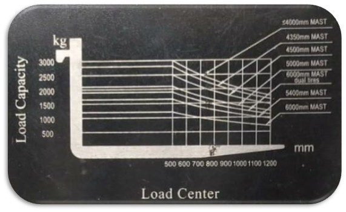
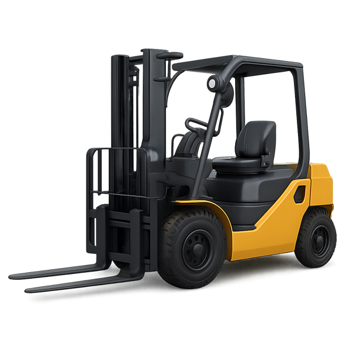

Vistas lateral, frontal e superior — apoio ao treinamento de NR-11 (Anexo II)
✅
ESTÁVEL
O centro de gravidade combinado está dentro do triângulo de estabilidade.
Capacidade utilizada
0%
Margem de estabilidade
100%
Peso da carga
1000 kg
Capacidade no centro de carga
2500 kg
Vista lateral
tombamento p/ frente ou trás
Vista frontal
tombamento lateral
Vista superior — triângulo de estabilidade
o teste completo (2D)
Capacidade x centro de carga
o que diz a plaqueta
Modelo de empilhadeira
Carga sobre os garfos
Operação (mastro e deslocamento)
Condição dinâmica simulada
Nenhuma
Frenagem brusca
Curva fechada
Opções
Restaurar padrão
Modelo baseado numa plaqueta real (foto abaixo) — o gráfico em
leque mostra a capacidade em cada centro de carga, para cada altura de mastro disponível. Os valores
acompanham a configuração atual da aba Configurar.

Referência: plaqueta real usada como modelo para o gráfico acima.
Clique em um cenário para carregar a configuração e discutir com a turma.
Resumo de apoio didático sobre pontos centrais da NR-11 (Anexo II — Empilhadeiras)
para uso em treinamento. Consulte sempre o texto oficial vigente da norma e o manual do fabricante do
equipamento utilizado.
Checklist de inspeção pré-uso (não altera a simulação — reforço de hábito operacional).
Reiniciar checklist

Apoio ao treinamento de NR-11 — uso educacional
Simulador de Estabilidade da Empilhadeira
Uma ferramenta visual para explicar, em três vistas técnicas (lateral, frontal e superior), por que uma
empilhadeira tomba: o triângulo de estabilidade, o centro de carga e os efeitos de elevar,
inclinar, acelerar, frear e fazer curvas.
Use a aba Configurar para ajustar peso, centro de carga, altura de elevação, inclinação do mastro
e condições dinâmicas (frenagem/curva) — as três vistas e o status no topo reagem em tempo real.
Use a aba Cenários para carregar situações prontas de risco (sobrecarga, centro de carga deslocado,
frenagem com carga elevada, curva fechada) e discutir cada uma com a turma.
Use a aba NR-11 para revisar os pontos-chave da norma e a aba Checklist para simular a
inspeção pré-uso.
A barra no topo mostra o estado atual: estável, margem reduzida ou tombamento — e as
vistas se inclinam para ilustrar a queda quando o limite é ultrapassado.